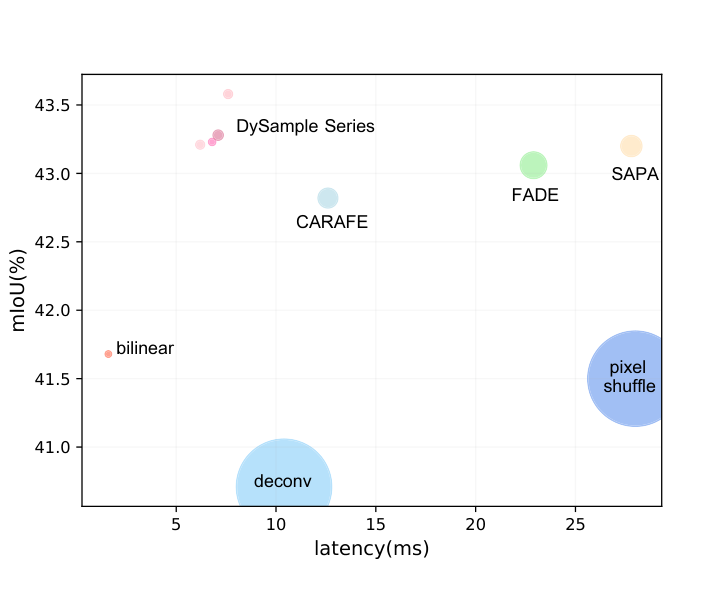
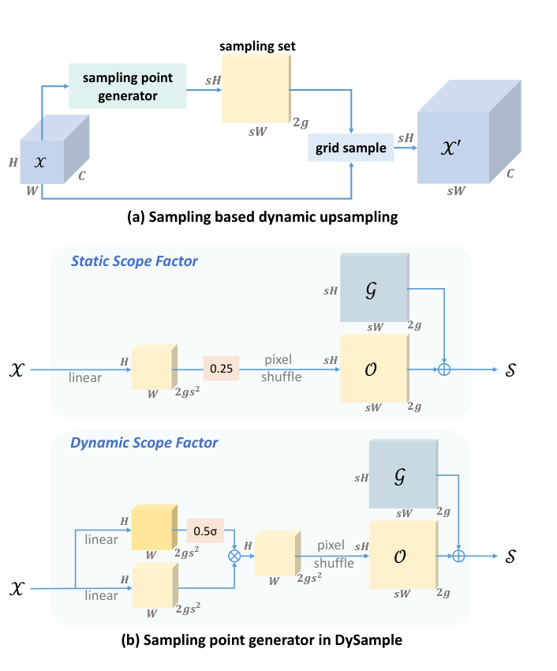
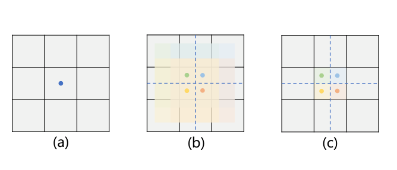
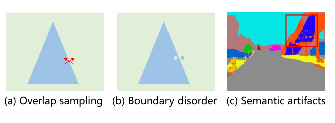
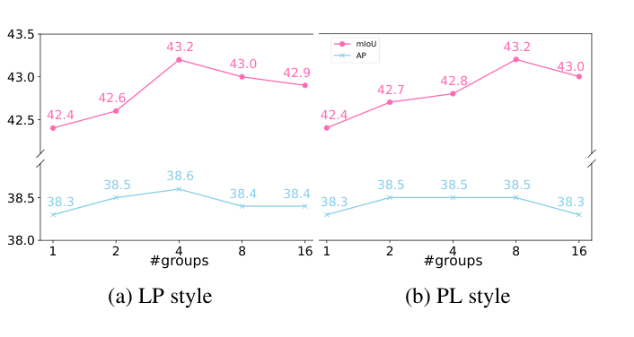
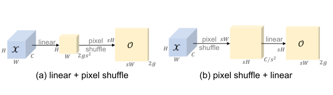
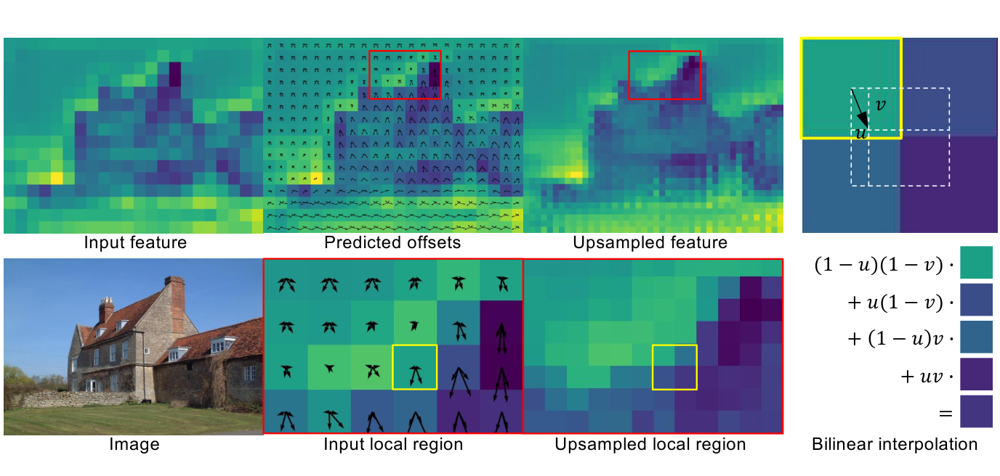
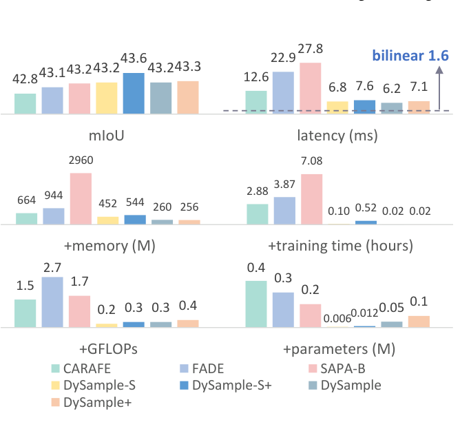
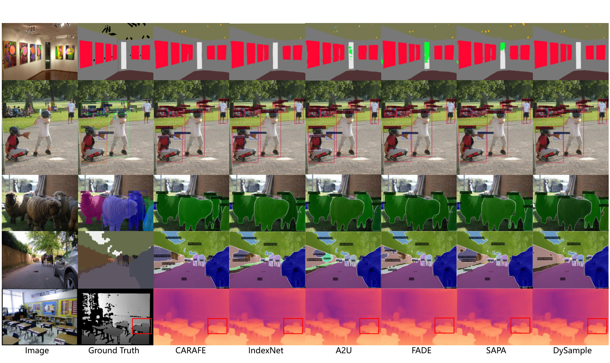

超轻量且有效的动态上采样器 —— 绕开动态卷积，从点采样（point sampling）的视角重新形式化上采样
绕开动态卷积，把上采样重新形式化为点采样：为每个上采样点生成内容感知的采样偏移，再用 PyTorch 内置的 grid sample 函数对连续特征图重采样
无需耗时的动态卷积与定制 CUDA 实现，所需参数量、FLOPs、GPU 显存与延迟大幅低于 CARAFE、FADE、SAPA 等先前方法
先给出朴素实现，再经控制初始采样位置、约束偏移移动范围、按通道分组三个逐步改进强化上采样行为，最终组合出四个变体
在语义分割、目标检测、实例分割、全景分割、单目深度估计五个密集预测任务上均优于已有上采样器
特征上采样（Feature Upsampling）是密集预测模型中逐步恢复特征分辨率的关键环节，其质量直接决定逐像素预测的精度——编码器-解码器结构普遍要面对「低分辨率特征如何高质量放大」的问题
最常用的最近邻插值与双线性插值按固定规则取值，完全忽略特征图中的语义信息
为增加灵活性引入的可学习上采样器，但存在棋盘伪影问题
另一类可学习上采样器，但对高层任务并不友好

X′ = grid sample(X, S)
X：低分辨率输入特征 · S：采样位置集合 · X′：重采样得到的高分辨率特征
直观上，只要采样位置取得足够「懂内容」，无需动态卷积也能完成内容感知的上采样
O = linear(X) · S = G + O
初步成绩：Faster R-CNN 37.9 AP、SegFormer-B1 41.9 mIoU，与 CARAFE（38.6 AP、42.8 mIoU）尚有差距——朴素的偏移生成还不足以支撑高质量上采样



O = 0.25 · linear(X)

O = 0.5 · sigmoid(linear1(X)) ⊙ linear2(X)
取值范围 [0, 0.5]，以 0.25 为中心


SegFormer-B1 与 MaskFormer，指标 mIoU 与 bIoU
Faster R-CNN 与 Mask R-CNN，指标 AP 系列
Panoptic FPN，指标 PQ / SQ / RQ
DepthFormer-SwinT
对比上采样器：bilinear、反卷积、Pixel Shuffle、CARAFE、IndexNet、A2U、FADE、SAPA-B；实验仅替换模型中的上采样阶段，其余训练设置保持不变
| 任务 / 基线 | 指标 | Bilinear | CARAFE | FADE | SAPA-B | DySample 系列最优 |
|---|---|---|---|---|---|---|
| SegFormer-B1（ADE20K） | mIoU | 41.68 | 42.82 | 43.06 | 43.20 | 43.58（DySample-S+，+1.90） |
| Faster R-CNN R50（COCO） | AP | 37.5 | 38.6 | 38.5 | 37.8 | 38.7（DySample+） |
| Mask R-CNN R50（COCO） | Mask AP | 34.7 | 35.4 | 35.1 | 35.1 | 35.7（DySample+） |
| Panoptic FPN R50（COCO） | PQ | 40.2 | 40.8 | 40.9 | 40.6 | 41.5（DySample+） |
| DepthFormer-SwinT（NYU） | δ < 1.25 | 0.873 | 0.877 | 0.874 | 0.870 | 0.878（DySample+） |
MaskFormer mIoU：52.70 → 53.91（+1.21，Swin-B）、54.10 → 54.90（+0.80，Swin-L）；Faster R-CNN R50 → R101 分别带来 +1.2 / +1.1 的 box AP 提升
SegFormer-B1 上 DySample 系列 bIoU（29.12–29.93）低于 FADE（31.68）与 SAPA-B（30.96）——引导类上采样器主要改善边界质量
+0.2
+0.2 ~ +0.3
+0.3 ~ +0.8
+0.1
mIoU / AP


DySample 输出与 CARAFE 相近，但边界附近更干净；引导类上采样器边界更锐利，却在内部区域出现错误预测
DySample 给出准确且一致的椅子深度图，验证了其在恢复细节与保持平坦区域一致性上的优势
绕开核范式与定制 CUDA 包，仅凭 PyTorch 内置的 grid sample 函数即可实现内容感知的动态上采样，工程可用性与部署友好度极高
仅以数万级参数增量在五个密集预测任务上全面超越 CARAFE、FADE、SAPA，延迟逼近双线性插值，可安全替换现有密集预测模型中的 NN / bilinear 插值
「朴素设计 + 逐步改进」：每一步改动（初始化、范围约束、分组、动态因子）都有动机解释与消融数据支撑，实验丰富，值得改进类工作模仿
bIoU（29.12–29.93）全面低于 FADE（31.68）与 SAPA-B（30.96），改善主要在内部区域；对边界敏感的任务（深度抠图、医学影像分割），引导类方法仍有一席之地
深度估计上 DySample+ 仅 +0.05（δ<1.25）与 -0.04（Abs Rel）；DySample-S 的 0.871 反而低于 bilinear 的 0.873——变体选择不当可能无增益
PL 在 SegFormer / MaskFormer 上更好、其余模型略差；分组数按经验取 LP=4、PL=8，实际使用仍需针对自己的骨干做一轮消融
限于 ×2 上采样与 FPN 类融合结构；更大上采样倍率以及与其它特征融合方式的组合效果在原文中未获取